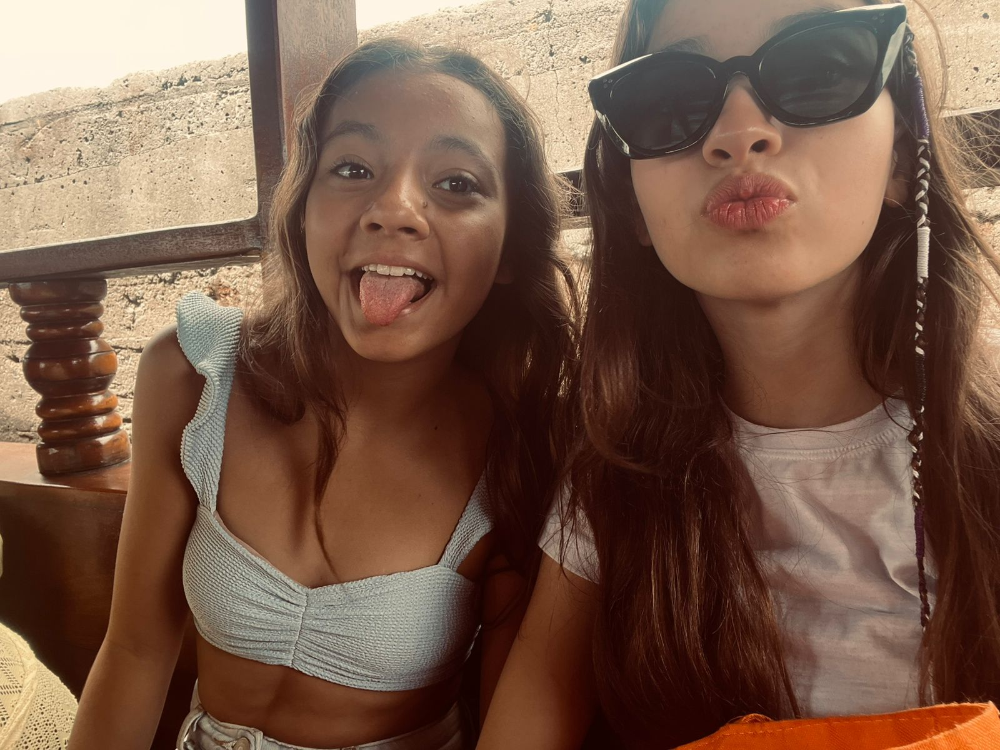
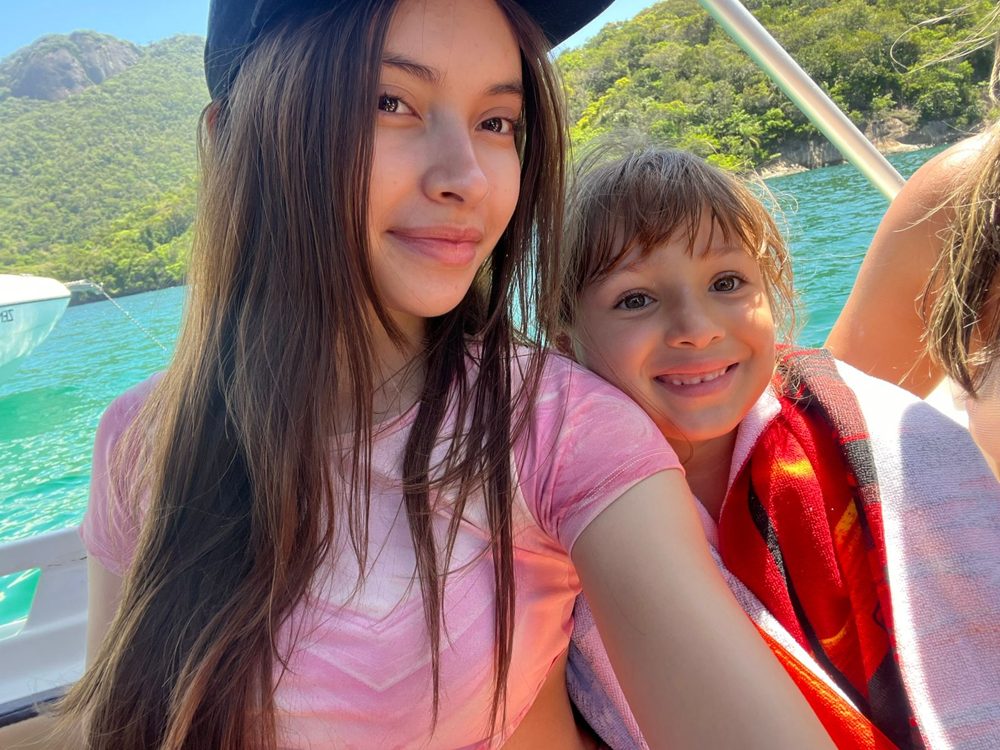
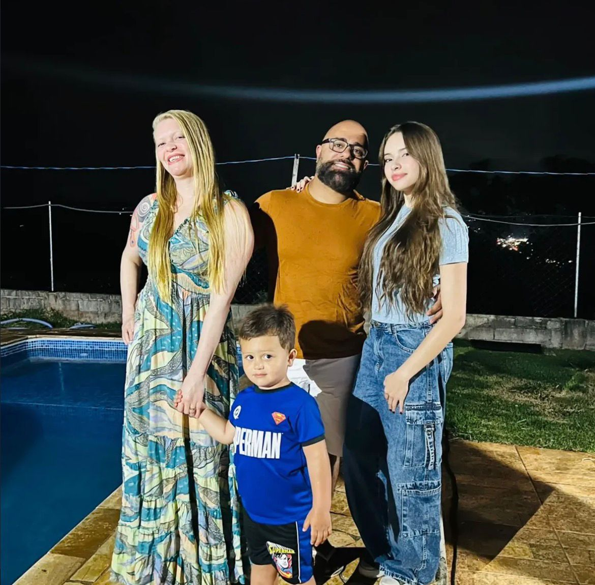
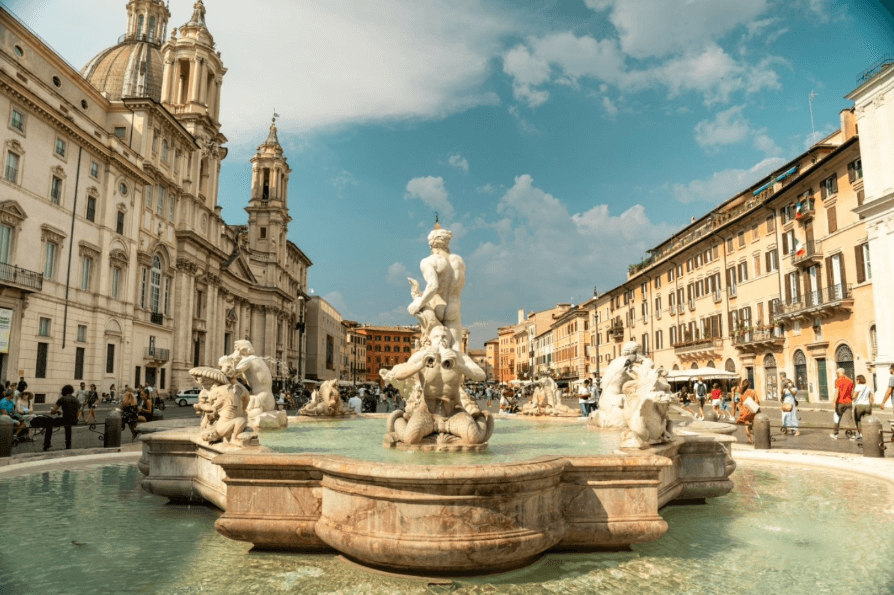
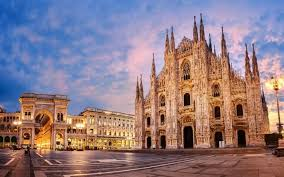
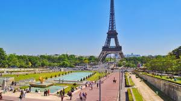
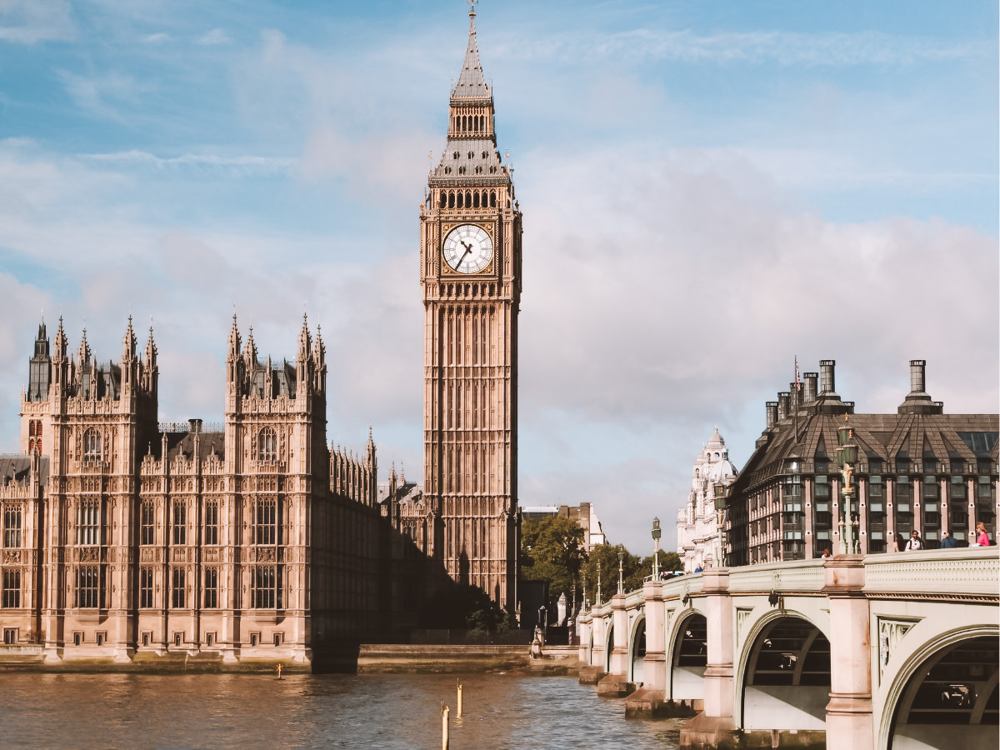

Lençóis Maranhenses - MA

Sobre os Lençóis Maranhenses!
Beto Carrero World - SC

Sobre o Beto Carrero World!

Sobre Curitiba!
Arraial do Cabo - RJ

Sobre Arraial do Cabo!
Angra dos Reis - RJ

Sobre Angra dos Reis!
Olá! Eu me chamo Pietra Rodrigues Guimarães, tenho 14 anos e estudo no Instituto J&F. Essa aqui sou eu:
Algumas das coisas que eu amo fazer são:
Falando mais sobre as curiosidades: eu nasci no dia 30 de maio de 2011, meu estilo de dança favorito é o hip-hop, amo de paixão ler livros de psicologia, romance e suspense. Adoro assistir a séries e filmes de romance, suspense e aventura, principalmente se forem da DC. Também tenho Injustice, Street Fighter e The King of Fighters como jogos favoritos. Diria que meu maior hobby é escutar música, Justin Bieber, The Neighbourhood e Chase Atlantic são meus artistas preferidos, e minha comida favorita é macarrão ao molho branco!
Para resumir, fiz um vision board com essas e outras coisas que também adoro! Vejam:

Continuando mais nesse lado sobre a minha vida pessoal e coisas que amo, também gostaria de falar sobre a minha família, que é uma das razões de eu ter a determinação que tenho, e com eles tudo fica mais leve! ❤️


Se tem algo que eu adoro, é conhecer lugares novos. Com isso, aqui estão alguns lugares que já visitei:


Apesar desses lugares incríveis que já conheci, ainda tem lugares que eu SONHO em conhecer, até porque, o meu sonho é viajar o mundo inteiro (mais uma curiosidade! KKKKKKKKK). Aqui estão os lugares que eu mais sonho em visitar:





Bom, isso é um pouco sobre mim e eu espero muito que tenham gostado! Foi extremamente divertido criar essa página para aprofundar um pouco mais do autoconhecimento e expressar de alguma forma as coisas que eu amo. :)